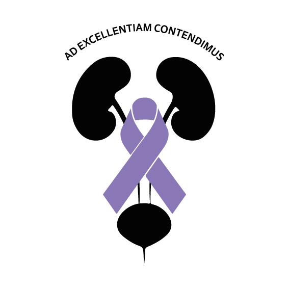

Updates
Congress Launch

Please take note that the below programme is provisional - the finalised programme will be uploaded before the end of February 2025
| Uro-Onco 2025 | ||||
|---|---|---|---|---|
| Fri 1 August | Day 1 | 16:00 - 17:00 | Arrival and registration | |
| 17:00 - 18:00 | The benefit and future of Robotic Surgery
The benefit of NBI in bladder screening for cancer |
|||
| 18:00 - 20:00 | Networking cocktail social | |||
| Sat 2 August | Day 2 | 08:00 - 08:30 | Arrival and registration | |
| Session 1 | 08:30 - 10:45 | When surgery is recommended versus radiation therapy
Brachytherapy VS Prostatectomy Understanding molecular structure on a cellular level Genetic testing in prostate cancer! Who, When & Why? Sequencing systemic: How do we choose therapies? |
||
| 10:45 - 11:15 | Refreshment break | |||
| Session 2
Bladder Cancer - Primary |
11:15 - 13:00 | Surgery versus neo-adjuvant systemic therapy
How do we decide? Urological approach to high-risk cancer Systemic therapy in bladder cancer Intravesical therapy in bladder cancer |
||
| 13:00 - 14:00 | Lunch | |||
| Session 3
Renal cancer |
14:00 - 15:40 | Evolving approach in renal carcinoma at first diagnosis
Increasing scope of partial nephrectomy How do different pathological sub-types determine treatment Ablation treatments for renal carcinomas |
||
| 15:40 - 16:00 | Refreshment break | |||
| Session 4
MDT |
16:00 - 17:00 | MDT
Case studies: The benefits of an MDT |
||
| 19:00 - 23:00 | Casual networking dinner | |||
| Sun 3 August | Day 3 | 09:00 | ||
| Session 5 | 09:00 - 09:30 | Social media "do's and don'ts"
How specialists should engage on social media |
||
| 09:30 - 10:00 | New therapies and understanding the authorisation process for new frontiers and treatments | |||
| 10:0 - 10:30 | Closing: JAUC and the vision for the academic practice | |||

The 2025 Uro-Onco Congress will be held at the upmarket business resort situated in Sandton, The Capital, on the Park.
Recent Posts
Updates
Updates